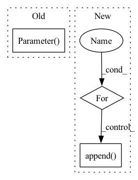

Pattern ID :8540

Before Change
def __init__(self, in_feats1, in_feats2, dim, num_classes, num_node_layer, num_edge_layer, dropout):
super(RSHN, self).__init__()
// map the node feature
self.feats = nn.Parameter(th.FloatTensor(in_feats1, dim))
// map the edge feature
self.linear_e1 = nn.Linear(in_features=in_feats2, out_features=dim, bias=False)
self.linear_e2 = nn.Linear(in_features=dim, out_features=dim, bias=False)
self.cl_conv1 = AGNNConv()
After Change
self.edge_layers.append(AGNNConv())
self.node_layers = nn.ModuleList()
for i in range(num_node_layer):
self.node_layers.append(GraphConv(in_feats=dim, out_feats=dim, activation=th.tanh))
self.dropout = dropout
self.emd2pred = nn.Linear(dim, num_classes)
In pattern: SUPERPATTERN
Frequency: 3
Non-data size: 3
Instances
Fragment ID: 29592203
Project Name: bupt-gamma/openhgnn
Commit Name: 5b978d8c10bf24304d51be5f4c2c306d5720b7b3
Time: 2021-04-14
Author: theheavenszhao@outlook.com
File Name: openhgnn/models/RSHN.py
M Class Name: RSHN
N Class Name: RSHN
M Method Name: __init__(8)
N Method Name: __init__(8)
M Parent Class: BaseModel
N Parent Class: nn.Module
M File Name: openhgnn/models/RSHN.py
N File Name: openhgnn/models/RSHN.py
M Start Line: 23
M End Line: 36
N Start Line: 43
N End Line: 54
'>
Before Change
h = h_dict.get(ntype)
if h is None:
if all_feats:
embed = nn.Parameter(torch.FloatTensor(n_nodes, self.embed_size))
// initrange = 1.0 / self.embed_size
// nn.init.uniform_(embed, -initrange, initrange)
nn.init.xavier_uniform_(embed, gain=nn.init.calculate_gain("relu"))
self.embed_dict[ntype] = embed
After Change
self.type_node_num_sum = [0]
self.all_type = []
for ntype, type_num in n_nodes_dict.items():
num_now = self.type_node_num_sum[-1]
num_now += type_num
self.type_node_num_sum.append(num_now)
self.all_type.append(ntype)
self.type_node_num_sum = torch.tensor(self.type_node_num_sum)
linear_dict = {}
'>
Fragment ID: 29592201
Project Name: bupt-gamma/openhgnn
Commit Name: 581e99d8a40f9b8f696cf9dae1f8ed03e615105d
Time: 2023-01-12
Author: 50618951+Zhanghyi@users.noreply.github.com
File Name: openhgnn/layers/HeteroLinear.py
M Class Name: HeteroFeature
N Class Name: HeteroFeature
M Method Name: __init__(7)
N Method Name: __init__(7)
M Parent Class: nn.Module
N Parent Class: nn.Module
M File Name: openhgnn/layers/HeteroLinear.py
N File Name: openhgnn/layers/HeteroLinear.py
M Start Line: 204
M End Line: 223
N Start Line: 208
N End Line: 229
'>
Before Change
self.classifier = nn.Linear(self.reid_dim, self.nID)
self.IDLoss = nn.CrossEntropyLoss(ignore_index=-1)
self.emb_scale = np.math.sqrt(2) * np.math.log(self.nID - 1)
self.s_det = nn.Parameter(-1.85 * torch.ones(1), requires_grad=False)
self.s_id = nn.Parameter(-1.05 * torch.ones(1), requires_grad=False)
def forward(self, preds, targets, imgs=None):
outputs, origin_preds, x_shifts, y_shifts, expanded_strides = [], [], [], [], []
After Change
self.reid_loss = nn.CrossEntropyLoss(ignore_index=-1)
self.classifiers = nn.ModuleList()
self.emb_scales = []
for idx, (label, id_num) in enumerate(zip(self.label_name, id_nums)):
print("{}, tracking label name: "{}", tracking_id number: {}, feat dim: {}".format(idx, label, id_num,
self.reid_dim))
self.emb_scales.append(np.math.sqrt(2) * np.math.log(id_num - 1))
self.classifiers.append(nn.Linear(self.reid_dim, id_num))
def forward(self, preds, targets, imgs=None):
outputs, origin_preds, x_shifts, y_shifts, expanded_strides = [], [], [], [], []
'>
Fragment ID: 29592200
Project Name: zhangming8/yolox-pytorch
Commit Name: e162fc0465b1f5d8b3211cdc81fd8eabb6dd55c7
Time: 2021-07-26
Author: zhangming8@github.com
File Name: models/losses/yolox_loss.py
M Class Name: YOLOXLoss
N Class Name: YOLOXLoss
M Method Name: __init__(6)
N Method Name: __init__(6)
M Parent Class: nn.Module
N Parent Class: nn.Module
M File Name: models/losses/yolox_loss.py
N File Name: models/losses/yolox_loss.py
M Start Line: 19
M End Line: 37
N Start Line: 19
N End Line: 48